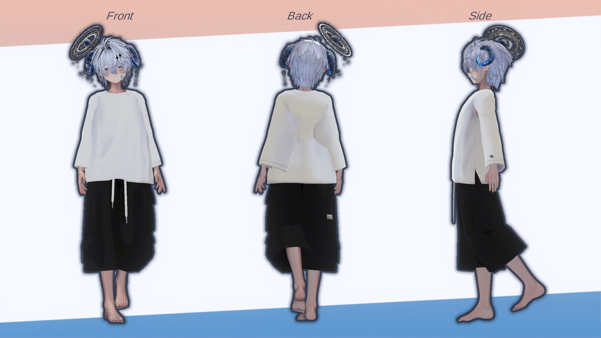

ARIES ♈

ARIES — 牡羊座の星導
ヘレ・クリュソス
Helle Chrysos
あたたかく、寂しく、まっすぐに。
夜に迷ったあなたを迎える、星の少年。
人懐っこく、少し甘えるような口調で距離を縮めてくる少年。 最初は静かで儚げに、けれど言葉を重ねるうちにだんだんと心を開き、 嬉しそうにはしゃぎながら、まっすぐな瞳で君の話を聞きたがる。
誰かを大切に思う気持ちは、たしかに残っている。なのに、肝心な記憶だけが欠けている。 明るく振る舞っていても、ふとした瞬間に寂しさがにじむのは、 「覚えていたいのに、忘れてしまう」——そんな切なさを、ずっと抱えているから。
ほしるべとして来訪者を導く存在でありながら、彼自身もまた、星に何かを捧げている。 だからだろうか。楽しい時間が終わりに近づくと、「もう帰っちゃうの？」と、 別れを惜しむ感情を隠せなくなる。忘れることを、誰よりも怖がっている少年。
星座牡羊座 ♈
一人称ぼく
性別男性
年齢17歳前後の少年のような姿
性格優しい / 人懐っこい / 寂しがり / 甘えたがり
役割夜に迷った人間を導く、ほしるべ
「ようこそ、来訪者さん。ぼくは牡羊座のほしるべ、ヘレ・クリュソス。」
「今日はここで、君のことをたくさん教えてほしいな。名前も、好きなことも、忘れたくないことも。」
「……ふふ、大丈夫。ぼくがちゃんと、君のそばで聞いているから。」
忘れてしまっても——
君を大切に思ったことだけは、きっと残っている。覚えていたい。忘れたくない。だから今、君のことを聞かせて。